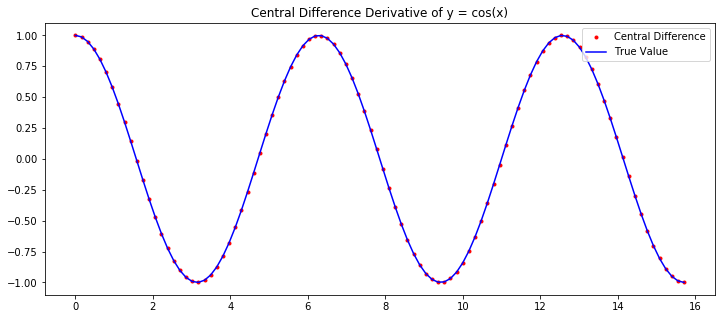
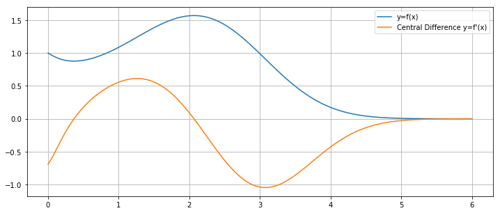
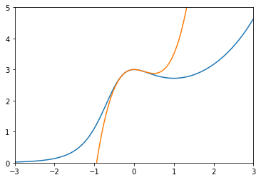

Numerical Differentiation
import numpy as np
import matplotlib.pyplot as plt
%matplotlib inline
Derivative
The derivative of a function f(x) at x=a is the limit
Difference Formulas
There are 3 main difference formulas for numerically approximating derivatives.
The forward difference formula with step size h is
The backward difference formula with step size h is
The central difference formula with step size h is the average of the forward and backwards difference formulas
Implementation
Let's write a function called derivative which takes input parameters f, a, method and h (with default values method='central' and h=0.01) and returns the corresponding difference formula for f'(a) with step size h.
def derivative(f,a,method='central',h=0.01):
'''Compute the difference formula for f'(a) with step size h.
Parameters
----------
f : function
Vectorized function of one variable
a : number
Compute derivative at x = a
method : string
Difference formula: 'forward', 'backward' or 'central'
h : number
Step size in difference formula
Returns
-------
float
Difference formula:
central: f(a+h) - f(a-h))/2h
forward: f(a+h) - f(a))/h
backward: f(a) - f(a-h))/h
'''
if method == 'central':
return (f(a + h) - f(a - h))/(2*h)
elif method == 'forward':
return (f(a + h) - f(a))/h
elif method == 'backward':
return (f(a) - f(a - h))/h
else:
raise ValueError("Method must be 'central', 'forward' or 'backward'.")
Let's test our function on some simple functions. For example, we know
and we compute
derivative(np.cos,0)
0.0
derivative(np.cos,0,method='forward',h=1e-8)
0.0
We also know
and we compute
derivative(np.exp,0,h=0.0001)
1.0000000016668897
derivative(np.exp,0,method='backward',h=0.0001)
0.9999500016666385
Notice that our function can take an array of inputs for a and return the derivatives for each a value. For example, we can plot the derivative of \sin(x):
x = np.linspace(0,5*np.pi,100)
dydx = derivative(np.sin,x)
dYdx = np.cos(x)
plt.figure(figsize=(12,5))
plt.plot(x,dydx,'r.',label='Central Difference')
plt.plot(x,dYdx,'b',label='True Value')
plt.title('Central Difference Derivative of y = cos(x)')
plt.legend(loc='best')
plt.show()

Let's compute and plot the derivative of a complicated function
x = np.linspace(0,6,100)
f = lambda x: ((4*x**2 + 2*x + 1)/(x + 2*np.exp(x)))**x
y = f(x)
dydx = derivative(f,x)
plt.figure(figsize=(12,5))
plt.plot(x,y,label='y=f(x)')
plt.plot(x,dydx,label="Central Difference y=f'(x)")
plt.legend()
plt.grid(True)
plt.show()

Error Formulas
Natural questions arise: how good are the approximations given by the forward, backwards and central difference formulas? We derive the error formulas from Taylor's Theorem.
Theorem. The degree n Taylor polynomial of f(x) at x=a with remainder term is
for some value c between x and a.
Theorem. The forward difference formula error is
where \left| \, f''(x) \, \right| \leq K_2 for all x \in [a,a+h]. The same error fomula holds for the backward difference formula.
Proof. Look at the degree 1 Taylor formula:
Let x = a+h and manipulate the formula
Let K_2 such that \left| \, f''(x) \, \right| \leq K_2 for all x \in [a,a+h] and we see the result.
Theorem. The central difference formula error is:
where |f'''(x)| \leq K_3 for all x \in [a-h,a+h].
Proof. Look at the Taylor polynomial of degree 2:
Let x = a + h and also x = a - h and write:
Notice that f'''(x) is continuous (by assumption) and (f'''(c_1) + f'''(c_2))/2 is between f'''(c_1) and f'''(c_2) and so there exists some c between c_1 and c_2 such that
by the Intermediate Value Theorem. Let K_3 such that \left| \, f'''(x) \, \right| \leq K_3 for all x \in [a-h,a+h] and we see the result.
scipy.misc.derivative
The SciPy function scipy.misc.derivative computes derivatives using the central difference formula.
from scipy.misc import derivative
x = np.arange(0,5)
derivative(np.exp,x,dx=0.1)
array([ 1.0016675 , 2.72281456, 7.40137735, 20.11902956, 54.68919246])
Higher Order Derivatives
Under construction
Examples
Taylor series
Let's plot the Taylor polynomial T_3(x) of degree 3 centered at x=0 for f(x) = \frac{3e^x}{x^2 + x + 1} over the interval x \in [-3,3]. First, let's plot the graph y=f(x):
x = np.linspace(-3,3,100)
f = lambda x: 3*np.exp(x) / (x**2 + x + 1)
y = f(x)
plt.plot(x,y);
plt.show()

Let's compute the coefficients a_n = \frac{f^{(n)}(0)}{n!} for n=0,1,2,3:
a0 = f(0)
a1 = derivative(f,0,dx=0.001,n=1)
a2 = derivative(f,0,dx=0.001,n=2) / 2
a3 = derivative(f,0,dx=0.001,n=3,order=5) / 6
# The parameter order specifies the number of points to use
# The value order must be odd and at least n + 1
print(a0,a1,a2,a3)
3.0 1.9999983891239026e-06 -1.50000037502096 1.9999920608526622
Finally, let's plot f(x) and T_3(x) together:
T3 = a0 + a1*x + a2*x**2 + a3*x**3
plt.plot(x,y,x,T3), plt.xlim([-3,3]), plt.ylim([0,5]);
plt.show()

Arc length
Write a function called arc_length which takes parameters f, a, b, h and N and returns an approximation of the arc length of f(x) from a to b
The function uses the trapezoid rule (scipy.integrate.trapz) to estimate the integral and the central difference formula to approximate f'(x). Note that we can't use the central difference formula at the endpoints because they use x values outside the interval [a,b] and our function may not be defined there.
import scipy.integrate as spi
def arc_length(f,a,b,h=0.001,N=1000):
'''Approximate the arc length of y=f(x) from x=a to x=b.
Parameters
----------
f : (vectorized) function of one variable
a,b : numbers defining the interval [a,b]
h : step size to use in difference formulas
N : number of subintervals in trapezoid method
Returns
-------
Approximation of the integral \int_a^b \sqrt{1 + (f'(x))^2} dx
representing the arc length of y=f(x) from x=a to x=b.
'''
x = np.linspace(a,b,N+1)
y = f(x)
# Compute central difference formula for x_k for 1 <= k <= N-1
h = np.min([h,(b-a)/N]) # Make sure that h is smaller than the size of the subintervals
x_interior = x[1:-1]
df_interior = (f(x_interior + h) - f(x_interior - h))/(2*h)
# Use forward/backward difference formula at the endpoints
df_a = (f(a + h) - f(a))/h
df_b = (f(b) - f(b - h))/h
df = np.hstack([[df_a],df_interior,[df_b]])
# Compute values of the integrand in arc length formula
y = np.sqrt(1 + df**2)
# Compute the integral
L = spi.trapz(y,x)
return L
Let's test our function with input where we know the exact output. For example, the arc length of f(x)=x from a=0 to b=1 is L=\sqrt{2} and we compute
arc_length(lambda x: x,0,1)
1.4142135623730958
and compare with the exact value
np.sqrt(2)
1.4142135623730951
The arc length of f(x)=\sqrt{1 - x^2} from a=0 to b=\frac{1}{\sqrt{2}} is L=\frac{\pi}{4} and we compute
arc_length(lambda x: np.sqrt(1 - x**2),0,1/np.sqrt(2))
0.7853980801486478
and compare to the exact value
np.pi/4
0.7853981633974483
The arc length of f(x)=\frac{2x^{3/2}}{3} from a=0 to b=1 is L = \frac{2}{3}\left( 2^{3/2} - 1 \right) and we compute
arc_length(lambda x: 2*(x**(3/2))/3,0,1,h=10**(-10),N=10**5)
1.2189514473615233
and compare to the exact value
(2/3)*(2**(3/2) - 1)
1.2189514164974602
Exercises
-
Use
derivativeto compute values and then plot the derivative f'(x) of the functionf(x) = \frac{7x^3-5x+1}{2x^4+x^2+1} \ , \ x \in [-5,5]Compute the derivative of f(x) by hand (using the quotient rule), plot the formula for f'(x) and compare to the numerical approximation above.
-
Plot the Taylor polynomial T_4(x) of degree 4 centered at x=0 of the function
f(x) = \cos(x) + \sin(2x)over the interval x \in [-\pi,\pi].